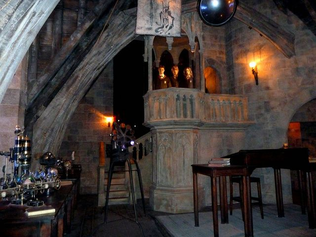

Defense Against the Dark Arts
Defense Against the Dark Arts Year One will serve as an introduction that will set the foundation for your magical education and properly prepare you for future work in Defense Against the Dark Arts. Here, we will explore what the Dark Arts are, some basic defensive and offensive spells, and low ranking dark creatures that will allow you to develop an understanding about how we discuss and defend against dark creatures.